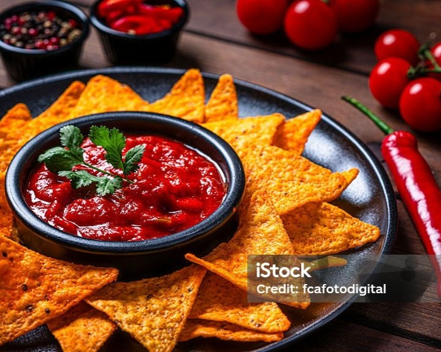
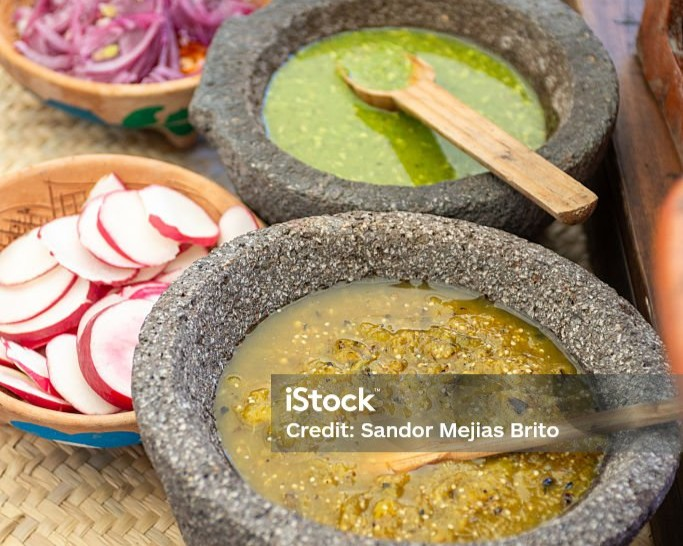

Salsa Roja
I know I mentioned this one would be a roasted prep, but since the chile de arbol we are working with is of the dry variation and there isn't many other ingredients in this recipe (until creativity hits you and you start adding some red tomatoes or some onion or some.. you get the idea *wink).
We'll only really be using the heat to roast the garlic, with the added benefit of getting the dry pepper to release the natural oils it's conserved since it was initially dried, trust me, the flavor is noticeable. You are more than welcome, even encouraged, to try with the fresh chile if you'd like.
You can do this in the oven, but since it's such a small quantity, I opt for the stovestop on a pan of your choice.
Heat should be on the high end of medium-high and you only want to do this until the galic starts to get some color on it, occasionally shaking the pan to stir the ingredients within before burning the garlic. This shouldn't take longer than 5-6 mins.
Once done, we transfer the garlic and peppers to a pestle and mortar to crush and incorporate (if you do not have one, a food processor or blender will work just as well). At this point, we also add in our salt (coarse for the extra grinding power), and work our ingredients until almost a dry, red paste/powder before squeezing the lime juice in.
If you used a blender, simply add the lime juice to the peppers, garlic and salt before blending.
Check the consistency, this will be a runnier rather than thick salsa, and give it a taste... that sure packs a bite to it, don't it? This is one where a little goes along way.
Salsa Verde
We'll want to give our peppers and tomatillos a good couple of rinses before starting.
Once done, we will place them in a pot and cover with water to boil on medium high for about 6-10 minutes, you'll notice a change in color while boiling and that's fine. We'll let them sit and cool for a few minutes while in the mean time we work on our dry ingedients.
(if using a blender, skip to next part) In a pestle and mortar; add the garlic, rosemary, and coarse salt and work them amongst themselves into almost a paste.
If the pot has cooled and the ingredients are safe to handle, we'll start of by adding the papers and making sure they're well ground before adding the tomatillos. Be mindful, they're known to pop and splash. That's a bonus point of using a blender and if you do use one, just make sure it's a rough blend, you want to avoid blending the seeds, trust me. Once the consistency is right, taste for salt and done, its ready to serve.

*Pro Tip: Try to make the green sauce using the roasting method for a completely different taste profile! 11/10 rating!